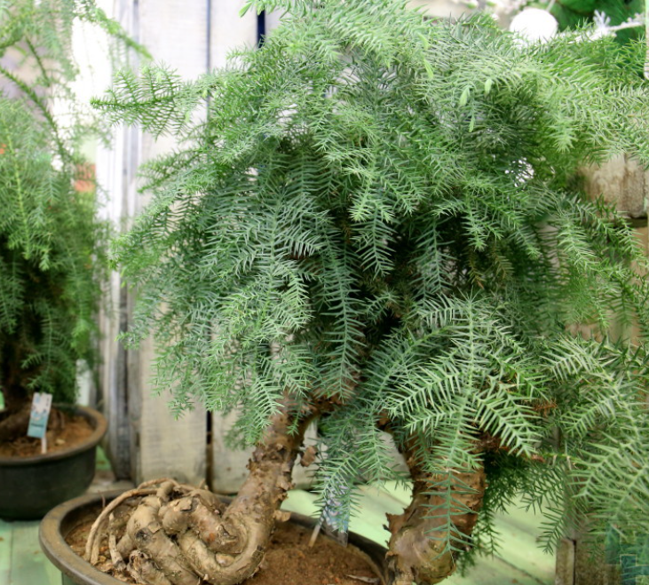
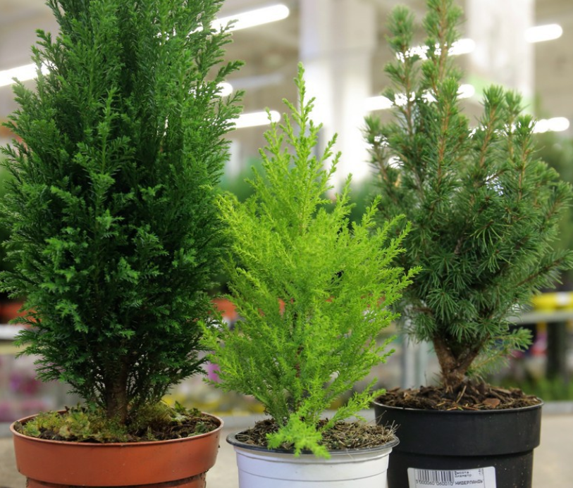
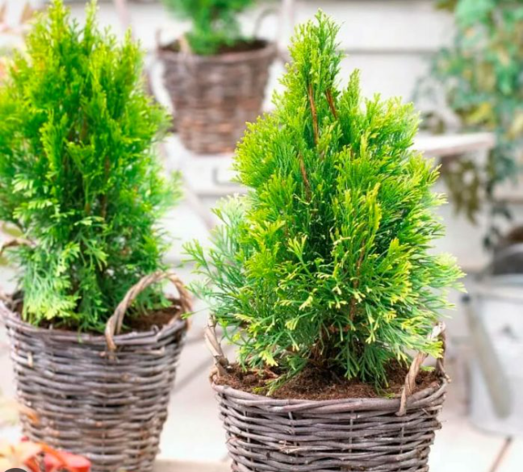
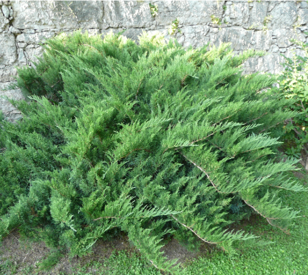
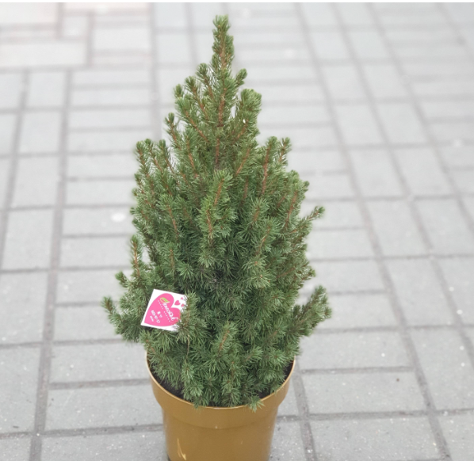

С Новым Годом!
пн |
вт |
ср |
чт |
пт |
сб |
вс |
|---|---|---|---|---|---|---|
| 28 | 29 | 30 |
1
Open!Лучший подарочек это ты! |
2
Open!Уже чувствуете? |
3
Open!Лубой опыт ценен |
4
Open!Здесь плохого не посоветуют |
5
Open!Ответ: гирлянда |
6
Open!Отстаивайте личные границы |
7
Open!Не зацикливайтесь на неудачах |
8
Open!И правда, так и есть!! |
9
Open!Проверьте обязательно! |
10
Open!Все когда-то заканчивается |
11
Open!Конечно же, Дед Мороз! |
12
Open!У него добрая традиция каждое 31 декабря ходить в баню |
13
Open!Это и есть волшебство |
14
Open!Благодарность - великая сила |
15
Open!Всегда верьте в лучшее |
16
Open!Найдите свою команду: Alt+f4 |
17
Open!Теплые стихи |
18
Open!Статистика врать не будет |
19
Open!Ответ: девять |
20
Open!Куда без поэзии в это время |
21
Open!Сделайте первый шаг сегодня |
22
Open!Почему бы не полюбоваться снегом |
23
Open!Ответ: взгляд |
24
Open!Метелью |
25
Open!Ответ: год |
26
Open!И правда приятно, не забывайте такого человека |
27
Open!Чистая математика |
28
Open!Поставьте елку, уже время |
29
Open!А вдруг вы уже в сказке, как посмотреть |
30
Open!Осталось потерпеть 2 дня |
31
Open!Уже совсем скоро |
1
Open!Желаем здоровья, счастья и всех всех благ! |
Новый год среди года!
-
Китай
- В Китае Новый год наступает значительно позже всего мира, традиционно это дата второго новолуния после 21 декабря. Следующий год по китайскому календарю наступит 22 января 2023 года.
-
Иран
- В Иране большая часть населения - мусульмане, поэтому Новый год они отмечают практически на три месяца позже. Новый год в Иране приходит вместе с первым днем первого месяца весны Фавардина. Также Навруз (или Новруз - Иранский новый год) отмечается у тюркских народов, которые используют солнечный календарь. Этот день обычно совпадает с днем весеннего равноденствия, а 21 марта объявлено Днем Навруз.
Казахстан
- Так же как и Иран отмечает Новый Год в день весеннего равноденствия: 22 марта.
Израиль
- В Израиле Новый год тоже отмечается отдельно от всего мира, а именно осенью. Этот праздник называется Рош ха-Шана, и он отмечается традиционно в новолуние месяца тишрей. Поэтому дата праздника каждый год разная. В новом году его отметят 15 сентября 2023 года.
Бангладеш
- В этой стране празднуется Бенгальский Новый год, который отмечают бенгальцы, независимо от исповедуемой религии. Эти народы живут в Бангладеш, Западной Бенгалии и некоторых общинах Индии. Обычно Новый год в Бангладеш и местах проживания бенгальцев отмечается 14-15 апреля - дата основана на исчислениях индуистского солнечного календаря.
Эфиопия
- Эфиопия, в отличие от остального мира, живет по юлианскому календарю. Здесь Новый год отмечается 12 сентября и называется Энкутаташ. Это не только наступление нового года, но и завершение сезона дождей и сбора урожая. Кстати, в Эфиопии отличается и летоисчисление, ведь в новое тысячелетие страна вступила только в 2008 году!
Елка для настоящих любителей праздника!
Араукария
 Это тропическая ёлочка, которую без особых проблем можно выращивать дома в качестве комнатного растения, а на Новый год достаточно нарядить игрушками и украсить мишурой. В отличие от обычной ёлки, у араукарии более светлая и шелковистая на ощупь хвоя, а семена можно даже есть.
-
Кипарисовик
 Обычно продают его в виде небольших кустиков или изящного деревца со светло-зелёной хвоей. Приобрести можно в любом цветочном магазине. Но так как зимовать в квартире ему жарковато, растение следует после праздников поставить в самое прохладное и светлое место в доме. Если прохладного места нет, его надо регулярно опрыскивать. На лето растение лучше переместить на улицу. Чтобы зелень не сохла, почаще носите кипарис в душ. Каждый год горшок ему нужно увеличивать на два размера.
-
Туя
 С помощью специальных садовых ножниц можно менять внешний вид деревца, насколько позволит фантазия. В конце осени дерево начинает цвести, а к Новому году на нём вырастают настоящие шишки. Кстати, восточная философия относит тую к растениям, которые способствуют долголетию и восстановлению жизненной энергии.
-
Можжевельник
 Это хвойное растение так и пахнет Новым годом. Дома его содержать достаточно сложно, требуется особый уход. Зато те, кто знает о его лечебных свойствах, не боятся трудностей, ведь наградой станет не только красивое вечнозелёное растение, но и крепкое здоровье всех обитателей квартиры, даже животных. Издревле считалось, что для того, чтобы прошла болезнь, надо погулять по зарослям можжевельника, а ещё лучше — выпить чай, приготовленный с добавлением ягод.
-
Пицея
 По сути, это та же самая ель, посаженная в горшок. После Нового года её можно смело высадить во дворе, дерево будет расти и радовать ещё много лет. Прирост ёлочки за год составляет 10-15 см. При покупке надо смотреть, чтобы ком земли, в котором растёт деревце, не был проморожен. Если в планах ёлку растить дальше, то не стоит покупать молодые растения, облитые спреем с имитацией снега или блёстками, — такие обычно долго не живут.
Тест "Новогодний меломан"!
-
ответ
-
ответ
-
ответ
-
ответ
-
ответ